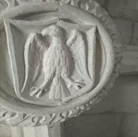
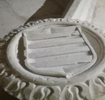
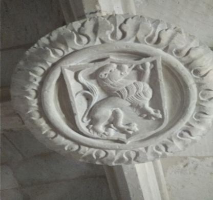
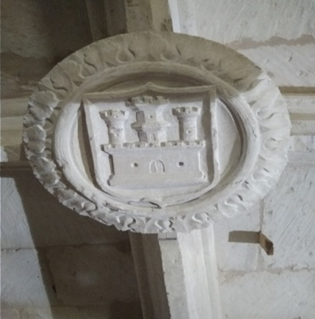
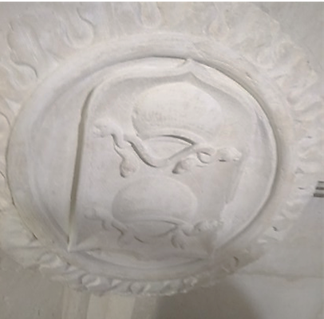
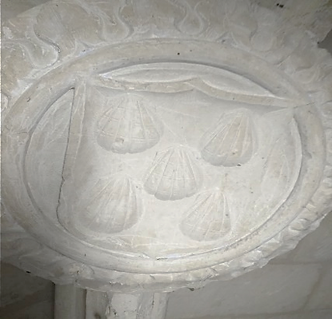

La iglesia parroquial de San Miguel Arcángel en Piña de Campos bien
merece una atenta y reposada visita. Justificada por su rica y variada
diversidad de arte sacro, haciendo de este templo una “Pequeña Bella
Desconocida.”
El interior de la iglesia se distribuye en tres naves, separadas por columnas
agrupadas de las que arrancan arcos apuntados. La cabecera del templo
presenta tres ábsides de planta poligonal, coronados en las naves laterales
por capillas funerarias separadas mediante rejas del S. XVI.
La utilización de la luz, talla y arquitectura han buscado un conjunto
escenográfico propio de la mentalidad estética barroca.
Las dos columnas del centro y la de la cabecera de la nave del Evangelio
son de planta octogonal, rematadas con capiteles toscanos. En las paredes
laterales aparecen apoyos, a modo de repisa o ménsula, con capiteles en
forma cónica o pirámide invertida con molduras.
Las bóvedas se construyen en bóvedas de terceletes y bóvedas de crucería
estrellada de nervios rectos; salvo los tramos de la cabecera que
presentan combados de diversas formas geométricas.


Las claves de las bóvedas están decoradas con medallones y pinjantes en forma de florón. Algunos de los
medallones representan pequeños escudos de la familia Manrique de
Lara.






La iglesia tiene dos entradas.

Una entrada ubicada a los pies de la iglesia, protegida por un pórtico del
siglo XVII, de planta cuadrada y cubierto con una cúpula decorada con
yeserías policromadas de formas quebradas. La clave pinjante de esta
cúpula está decorada con una balanza, símbolo de justicia y también de la
psicostasis o “pesaje del alma” asociado al Arcángel San Miguel.

Una segunda puerta, conocida como “puerta del sol”. Es de arco rebajado,
con un arco ciego de escaso fondo.
En el exterior los muros se dividen por medio de contrafuertes, que se
concentran en mayor número en la cabecera. El ábside central presenta
una forma rectangular, mientras que los ábsides laterales presentan una
forma poligonal